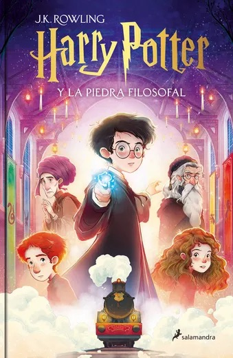
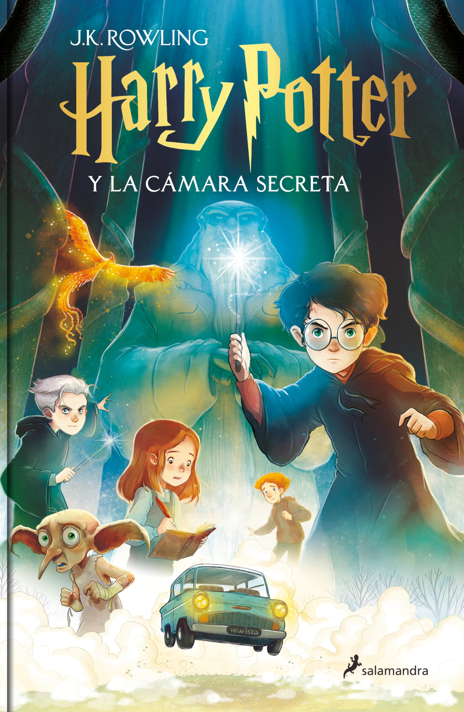
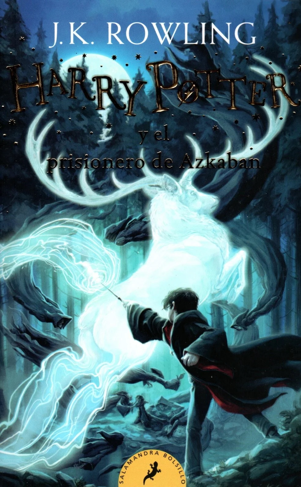

Reseñas de Libros
Aquí encontrarás mis reseñas de libros favoritos.
Harry Potter y la Piedra Filosofal

Autor: J. K. Rowling
Genero: Ficción Infantil Y Juvenil: Clásica Ficción Infantil - Ficción Juvenil: Fantasía
Sipnosis: Harry Potter y la piedra filosofal es el primer volumen de la ya clásica serie de novelas fantásticas de la autora británica J.K. Rowling. «Con las manos temblorosas, Harry le dio la vuelta al sobre y vio un sello de lacre púrpura con un escudo de armas: un león, un águila, un tejón y una serpiente, que rodeaban una gran letra H.» Harry Potter nunca ha oído hablar de Hogwarts hasta que empiezan a caer cartas en el felpudo del número 4 de Privet Drive. Llevan la dirección escrita con tinta verde en un sobre de pergamino amarillento con un sello de lacre púrpura, y sus horripilantes tíos se apresuran a confiscarlas. Más tarde, el día que Harry cumple once años, Rubeus Hagrid, un hombre gigantesco cuyos ojos brillan como escarabajos negros, irrumpe con una noticia extraordinaria: Harry Potter es un mago, y le han concedido una plaza en el Colegio Hogwarts de Magia y Hechicería. ¡Está a punto de comenzar una aventura increíble!
Mi opinion: Considero que es una introducción brillante al mundo mágico. La historia nos presenta a Harry, un niño huérfano que descubre que es un mago y es invitado a estudiar en Hogwarts, una escuela de magia. A lo largo del libro, se va revelando un universo fascinante lleno de criaturas mágicas, hechizos y secretos. Lo que más me gusta es cómo se combinan la fantasía con valores como la amistad, el coraje y la lealtad. Sin duda, es el punto de partida ideal para enamorarse de toda la saga.
Más información
Harry Potter y la cámara secreta

Autor: J. K. Rowling
Genero: Ficción Infantil Y Juvenil: Clásica Ficción Infantil - Ficción Juvenil: Fantasía
Sipnosis: Hay una conspiración, Harry Potter. Una conspiración para hacer que este año sucedan las cosas más terribles en el Colegio Hogwarts de Magia y Hechicería.» Muchas cosas le han pasado a Harry durante el verano, entre ellas, el peor cumpleaños de su vida, las funestas advertencias de un elfo doméstico llamado Dobby y el rescate de casa de los Dursley protagonizado por su amigo Ron Weasley al volante de un coche mágico volador. De vuelta en el Colegio Hogwarts de Magia y Hechicería, donde va a empezar su segundo curso, Harry oye unos extraños susurros que resuenan por los pasillos vacíos. Y entonces empiezan los ataques y varios alumnos aparecen petrificados... Por lo visto, las siniestras predicciones de Dobby se están cumpliendo....
Mi opinion: Pienso que es una continuación emocionante y más oscura que el primer libro. En esta historia, Harry regresa a Hogwarts para su segundo año, donde empiezan a ocurrir sucesos extraños: alumnos petrificados, mensajes misteriosos en las paredes y el temor de que la legendaria Cámara Secreta ha sido abierta. Me encanta cómo el libro profundiza en la historia de Hogwarts y en el pasado de algunos personajes clave, como Tom Riddle. Además, el suspenso y los giros hacen que sea difícil soltarlo. Es una lectura esencial para entender mejor el universo mágico y ver cómo Harry empieza a enfrentarse a amenazas más serias.
Más información
Harry Potter y el prisionero de Azkaban

Autor: J. K. Rowling
Genero: Ficción Infantil Y Juvenil: Clásica Ficción Infantil - Ficción Juvenil: Fantasía
Sipnosis: «Bienvenido al autobús noctámbulo, transporte de emergencia para el brujo abandonado a su suerte. Levante la varita, suba a bordo y lo llevaremos a donde quiera.» Cuando el autobús noctámbulo irrumpe en una calle oscura y frena con fuertes chirridos delante de Harry, comienza para él un nuevo curso en Hogwarts, lleno de acontecimientos extraordinarios. Sirius Black, asesino y seguidor de lord Voldemort, se ha fugado, y dicen que va en busca de Harry. En su primera clase de Adivinación, la profesora Trelawney ve un augurio de muerte en las hojas de té de la taza de Harry... Pero quizá lo más aterrador sean los dementores que patrullan por los jardines del colegio, capaces de sorberte el alma con su beso...
Mi opinion: Creo que marca un cambio importante en el tono de la historia. En este tercer libro, Harry regresa a Hogwarts mientras un peligroso prisionero, Sirius Black, ha escapado de Azkaban y aparentemente lo está buscando. Lo que más me gusta es cómo la trama se vuelve más compleja, con giros inesperados, secretos del pasado y nuevos personajes como los dementores y el profesor Lupin, que enriquecen mucho el mundo mágico. Es un libro que combina misterio, emoción y revelaciones clave sobre la historia de Harry y sus padres. Sin duda, uno de mis favoritos.
Más información
Volver a la página principal